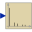
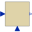
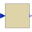

DiscreteBlockBase class of discrete control blocks |
Information
This information is part of the Modelica Standard Library maintained by the Modelica Association.
Basic definitions of a discrete block of library Blocks.Discrete. The output(s) will only change at events, but are not formally a discrete variable(s) in Modelica. The input(s) will be sampled, and can thus be continuous variable(s).
Important: If you connect several discrete blocks you should normally ensure that samplePeriod (and startTime) are exactly identical for all blocks, since otherwise the output from one block will be transformed into a continuous signal and sampled, which can cause a variable delay of up to one sample period leading to unexpected results.
Modelica 3.3 introduced synchronous operators that avoid the need to manually propagate samplePeriod to each block.
Parameters (2)
Outputs (2)
| sampleTrigger |
Type: Boolean Description: True, if sample time instant |
|---|---|
| firstTrigger |
Type: Boolean Description: Rising edge signals first sample instant |
Extended by (7)
|
Modelica.Electrical.PowerConverters.DCAC.Control
SpaceVector Pulse Width Modulation |
|
|  |
Modelica.Blocks.Math
Sampling and FFT of input u |
|  |
Modelica.Blocks.Interfaces
Discrete Multi-Variable controller |
|
Modelica.Blocks.Interfaces
Discrete Single-Variable controller |
|
|
Modelica.Blocks.Interfaces
Multiple Input Multiple Output discrete control block |
|
|  |
Modelica.Blocks.Interfaces
Multiple Input Multiple Output discrete control block |
|
Modelica.Blocks.Interfaces
Single Input Single Output discrete control block |